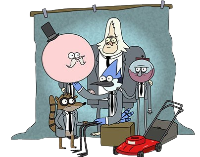

Está protagonizada por dos amigos, Mordecai (un arrendajo azul) y Rigby (un mapache), encargados de mantenimiento en un parque, que buscan cualquier excusa para no trabajar. En su día a día viven múltiples aventuras, muchas de ellas de carácter surrealista, en las que también interactúan el resto de los personajes.
Cada episodio de Regular Show se conforma de una argumentación empieza con un problema que necesita solución. Mientras los personajes trabajan en arreglarlo, la historia va complicándose de tal forma que acaban enfrentándose a situaciones fantásticas, sobrenaturales o extrañas que complican aún más su labor. Regular Show no se desarrolla en ninguna ciudad existente.
El marco principal es un parque privado con paseos, fuentes, puerto para barcas y una terraza con puesto de aperitivos. El cuidado de todas estas instalaciones permite ver a Mordecai y Rigby implicados en distintas actividades. Los empleados disponen de un carro de minigolf para desplazarse. Dentro del parque hay una casa de dos plantas que funciona como escenario principal.
Mordecai y Rigby comparten una habitación, mientras que en la otra reside Pops, el gerente. También hay despachos para Benson y el Sr. Maellard, aunque ninguno de los dos vive allí, e instalaciones comunes como el salón y la cocina. El edificio suele sufrir numerosos daños en algunos episodios, pero siempre vuelve a su estado original para el siguiente capítulo. En el parque residen también el resto de encargados de mantenimiento. Skips duerme en una casa separada, y Muscle Man y Hi-Five Ghost tienen una caravana en el exterior. Fuera de él, Benson vive un apartamento situado justo en frente del parque. La última temporada transcurre en el espacio exterior.
Los protagonistas de Regular Show son dos amigos de 23 años: Mordecai (un arrendajo azul) y Rigby (un mapache). Ambos tienen personalidades similares, pero Mordecai es responsable de sus actos mientras que Rigby tiende a ser inmaduro y egoísta. Trabajan como encargados de mantenimiento en un parque y siempre buscan cualquier excusa para librarse del trabajo, que ven tedioso y rutinario. Ese carácter disgusta a su jefe Benson (una máquina de chicles), siempre disgustado por la irresponsabilidad de Mordecai y Rigby, pero no parece importarle al alegre gerente, el señor Pops (Papaleta) ,un hombre con bigote y paleta por cabeza, quien es a su vez hijo del dueño del parque, el Sr. Maellard. El resto de empleados son Skips (un yeti inmortal), Muscle Man (Musculitos en España y Musculoso en Hispanoamérica),un ogro verde y obeso, y el fantasma "Hi-Five Ghost" (Fantasma Chócala en España y Fantasmano en Hispanoamérica). Entre la cuarta y sexta temporada, aparece también el becario Thomas (una cabra). Dentro del elenco habitual se incluyen dos empleadas de una cafetería, Margaret (Margarita en Hispanoamérica) ,una cardenal roja, de la que Mordecai está enamorado, su amiga Eileen ,una topo, quien está a su vez enamorada de Rigby. Otros personajes recurrentes son, Starla,la novia de Muscle Man, y C.J. ,una chica con forma de nube. Eileen termina uniéndose al grupo protagonista en la última temporada de la serie.
En 2008, Quintel desarrolló un corto titulado Regular Show, con los personajes recuperados de sus anteriores trabajos y uno nuevo, el mapache Rigby. El autor presentó su trabajo a The Cartoonstitute, un programa especial de Cartoon Network para jóvenes creadores en el que tuvo libertad creativa. Para desarrollar la historia utilizó un guion gráfico en vez de uno textual porque dotaba de sentido a los elementos más surrealistas. En el episodio piloto, Mordecai y Rigby compiten por un sofá jugando a piedra, papel o tijera, pero al empatar repetidas veces alteran el espacio-tiempo y están a punto de destruir el parque donde trabajan. Tanto Craig McCracken como Rob Renzetti, responsables de Cartoonstitute, dieron su visto bueno para que Cartoon Network Studios produjese el capítulo. Los cortometrajes de Cartoonstitute nunca llegaron a emitirse por televisión, pero Cartoon Network los subió a su sitio web el 14 de agosto de 2009. Regular Show fue uno de los dos proyectos aprobados entre catorce aspirantes, y el único surgido de Cartoonstitute que se convirtió en serie. Tiempo después, el episodio piloto se reutilizó para el capítulo First Day, correspondiente a la segunda temporada, al que se añadieron nuevas escenas. Ya con la serie confirmada, Quintel buscó para la producción a gente capaz de realizar un storyboard con un estilo similar al suyo. Por esa razón reclutó a jóvenes estudiantes de animación y excompañeros en las series donde había trabajado previamente. El primer episodio de Regular Show, The Power se estrenó el 6 de septiembre de 2010 con guion de Quintel y bajo la dirección creativa de Mike Roth, con quien ya había coincidido en Camp Lazlo. Posteriormente ha sumado a su equipo dibujantes de cómic independiente como Minty Lewis, Calvin Wong, Hellen Jo y Toby Jones. La serie cuenta con 261 episodios repartidos en ocho temporadas, además de una película para televisión. Todas las temporadas se desarrollan en el mismo escenario excepto la última, ambientada en el espacio y titulada Regular Show in Space, que sirve para concluir todas las tramas abiertas.